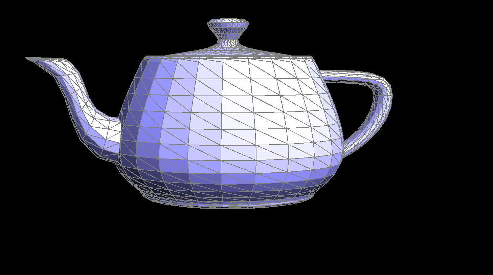

Overview
In this homework, I implemented Bezier using de Casteljau algorithm and extended it naturally to 2D surfaces. I also implemented area-weighted normal vectors to aid with Phong shading to make mesh lighting smoother. I then moved on to working with the half-edge data structure, where I implemented edge flips and edge splits. Lastly, I combined edge flip and edge split operations to implement the loop subdivision algorithm for mesh upsampling. I thought the most interesting thing about working on this project was the ingenuity of the half-edge data structure; although seemingly arbitrary to me at first, it become clear the more I worked with it how useful and intuitive it was for implementing mesh traversal algorithms. I also learned that pre-planning my algorithms with diagrams proved much more useful than trying to imagine it in my head.
Part 1
De Casteljau’s algorithm relies on recursively applying linear interpolation on subdivisions of the control points until one point remains. The collection of these final points generated by using different values of t from 0 to 1 results in the desired Bézier curve. I implemented it by filling out a function that, given a vector of points, evaluates the intermediate points given t.
Part 2
De Casteljau's algorithm extends to Bézier surfaces by applying the same principle used for Bézier curves but in two dimensions. A Bézier surface is defined by a grid of control points, with each point influencing the shape of the surface. The algorithm evaluates the surface at a given point by performing linear interpolations in both the u and v parameters, which correspond to the two dimensions of the surface. I implemented this by evaluating all the final points for each row of the control points grid at u and thus reducing the 2D grid to a 1D array of points, and then I find the final point on the surface by evaluadting that 1D array at v.
PART 3
I implemented the area-weighted vertex normals by calculating the cross-product between the vectors (V1 - V0) and (V2 - V1). Apparently, according to ed, the cross-product is already proportional to to triangle area, so there was no need to divide by area.
Part 4
I drew out every vertex and half-edge before and after the flip operation; I implemented it by just reassigning every pointer chance that I deduced from my drawing. At first, I screwed up by trying to do the flips in-line (i.e e0->halfedge()->next()->next() = e0->halfedge()->twin()->next()), but that was just impossible to debug and it broke like crazy. As a result, I assigned variables to every variable and half-edge and simply just re-assigned them as needed. For debugging techniques, I found using the VSCode “Debug & Run” command very useful for debugging segfaults since it would show you the exact line of the crash.
Part 5
I implemented the edge split operation by first creating the new vertex, edges, and half-edges, and then I used the same method and pattern from part 4: I assigned pointers according to this diagram that I made in the order recommended by the spec. In a spectacular miracle, I managed to get it right on the first try, so I didn’t need any debugging tricks.
Part 6
I implemented loop subdivision by first computing all the new positions of new and old vertices and storing them in temp variables. Then I split every single edge (and updated the new middle vertex value from my previous calculations), and then for every edge that isn’t new (i.e an edge that didn’t make up the edge that was split), I checked to see if it connected a new and old vertex, and if it did, I flipped it. Lastly, I updated all the old vertices that were apart of the original mesh based on the calculations from the first step.
Unlike the spectacular miracle I experienced in part 5, this took an extremely long time to debug. My biggest issue was that I was attempting to split edges inside a for loop, which caused crashes or infinite loops since splitting edges alters the mesh edges list. To fix this, I just created a new vector containing only the original edges.
I noticed that sharp corners and edges become smoother after subdivisions.I notice that the more I pre-split that edge, the sharper the feature remains after subdivisioning.
I think the cube becomes asymmetric since the triangle mesh on the cube is asymmetric, which compounds after a few iterations of subdivisioning. If I split edges on the cube such that every face is an “X” instead of a “\”, then the subdivisioned cube is also symmetric.
